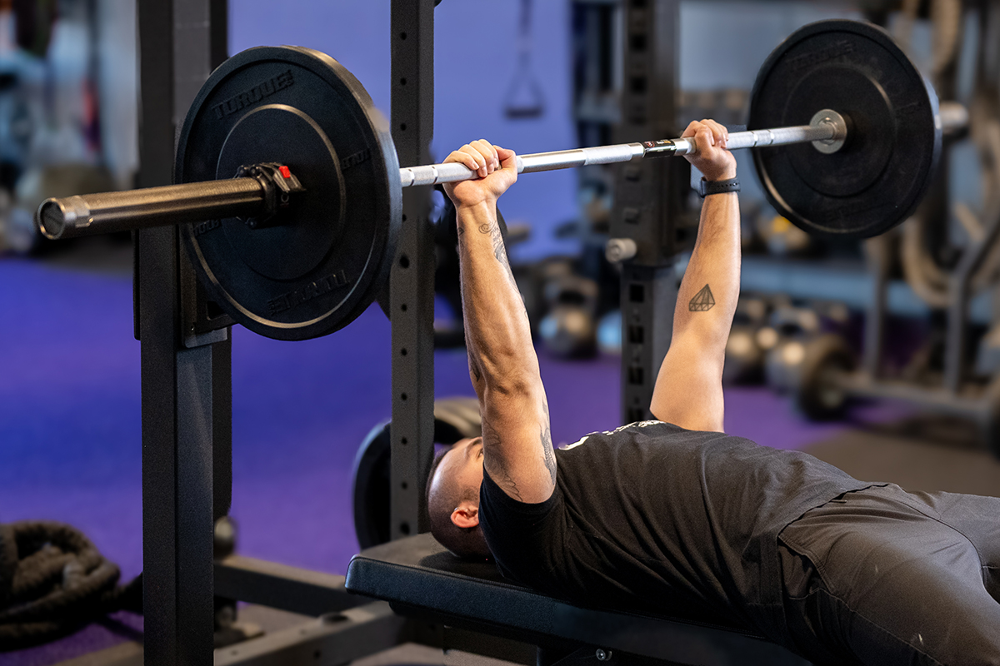
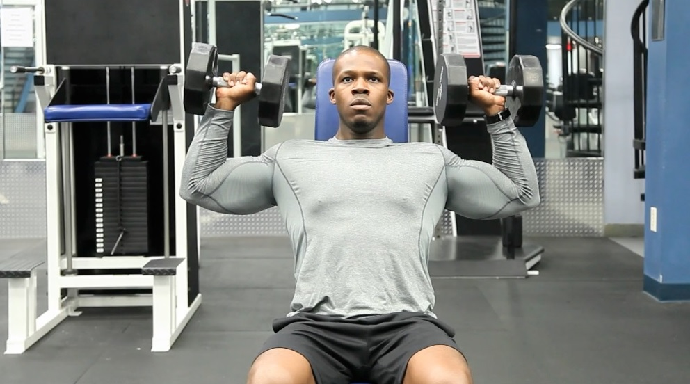
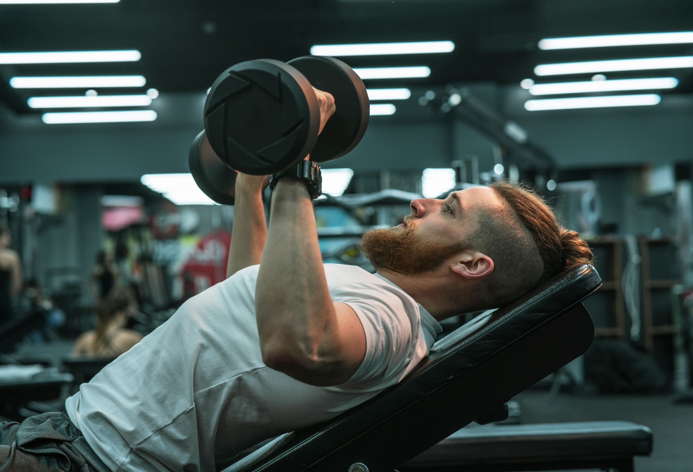
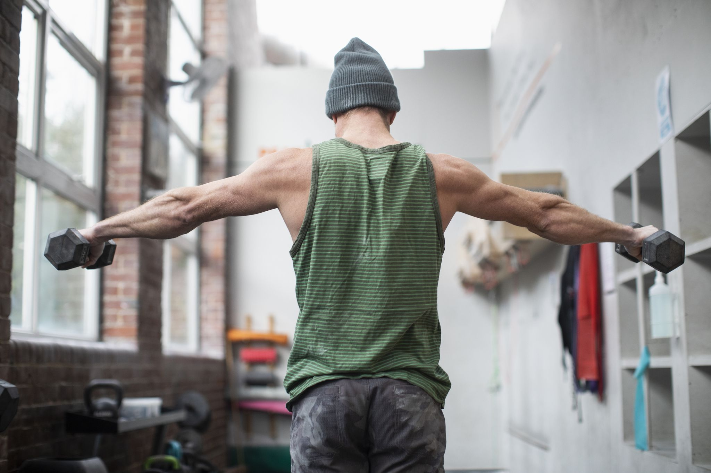
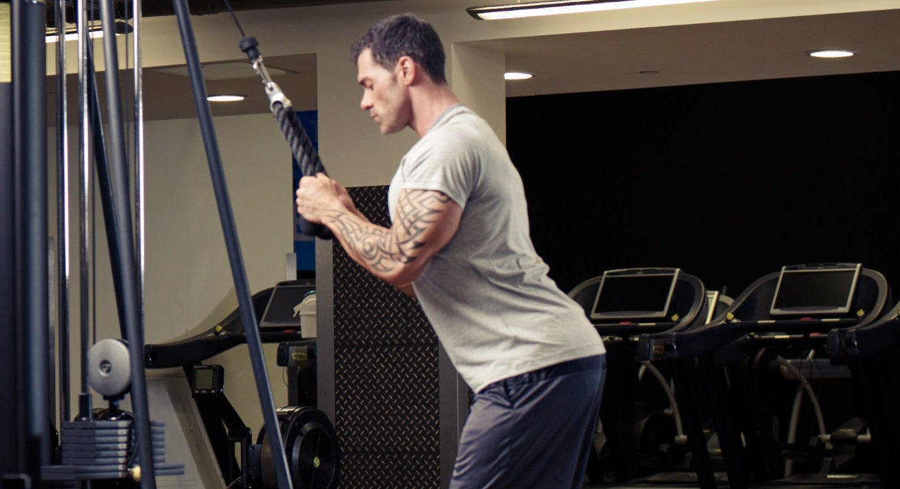

Push Workout Routine
Bench Press
Sets:3
Reps:5-7
Explanation: The bench press is a compound exercise that targets the chest, shoulders, and triceps. Lie on a bench, lower the barbell to your chest, and then push it back up until your arms are fully extended.
Seated Dumbbell Shoulder Press
Sets:3
Reps:6-8
Explanation: The seated dumbbell shoulder press targets the shoulders and triceps. Sit with your back straight, hold a dumbbell in each hand at shoulder height, and press them upward until your arms are fully extended.
Incline Dumbbell Press
Sets:3
Reps:8-10
Explanation: The incline dumbbell press targets the upper chest, shoulders, and triceps. Lie on an incline bench, hold a dumbbell in each hand, lower them to your chest, and press them back up until your arms are fully extended.
Side Lateral Raises
Sets:2
Reps:10-12
Explanation: Side lateral raises target the deltoid muscles of the shoulders. Stand with a dumbbell in each hand at your sides, then raise your arms out to the sides until they are parallel to the ground, and lower them back down.
Triceps Pressdowns
Sets:2
Reps:8-10
Explanation: Triceps pressdowns target the triceps. Stand facing a cable machine with a high pulley and attach a straight or angled bar. Grip the bar with your palms facing down, press the bar down until your arms are fully extended, then return to the starting position.
Overhead Triceps Extension

Sets:2
Reps:8-10
Explanation: The overhead triceps extension targets the triceps. Stand or sit with a dumbbell held with both hands above your head, elbows bent. Extend your arms to lift the dumbbell overhead until your arms are straight, then lower it back down.